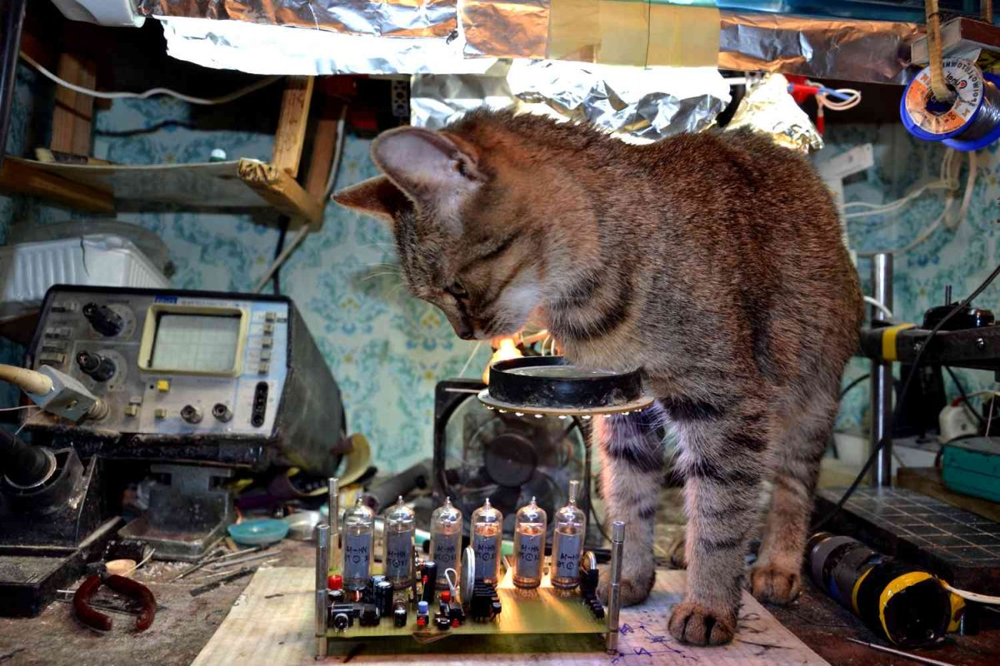

 У Вас есть хобби? - У вас бывали случаи когда приходилось отвечать на данный вопрос?! И вы задумчево начинаете перебирать у себя в голове все варианты своего хобби: "Так чем я занимаюсь!?, Работаю - это не хобби, люблю смотреть телевизор после работы - это тоже не хобби, люблю играть со своим котом - тоже не подходит, делаю репосты в соцсетях - это банально, люблю компьютерные игры - это мало кто одобрит в нашем обществе и. т. д. "
И приходите к выводу что интересным то особо ничем не занимаетесь, а ведь хочется найти занятие для души. Вот хочу поделится одним из вариантов хобби, которым я занялся и никапельки не жалею об этом. Сразу прошу дочитайте до конца, и я вас смогу убедить, что это хобби не только интересное, но и полезное в хозяйстве, а если это не так - имеете право поставить дизлайк. Итак. Это хобби - радиоэлектроника и робото-техника.
Радиоэлектроника значительно изменилась за последние десятилетия. Схемы, а, соответственно, и платы стали более сложными и компактными. Монтаж таких плат осуществляется на специальных станках в автоматическом режиме, и ручной труд сведен к минимуму. Но, несмотря на такие изменения, радиоэлектроника остается любимым хобби для многих людей. При определенных навыках из радиокомпонентов можно создавать не просто какие-то устройства, а настоящие произведения искусства.